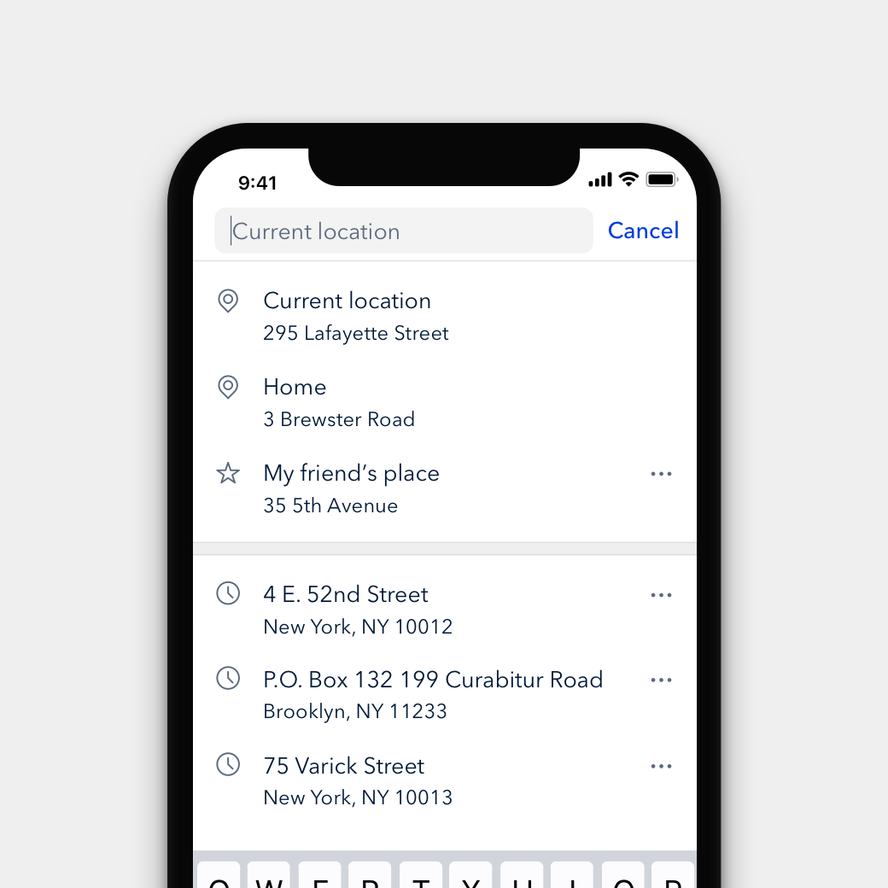

Comparing Doctors Use distance, reviews, cost, and appointment availabilty to choose a doctor.
Explore the Map Evaluate doctors with the same information, plus a map.

Cost Scores An experiment displaying absolute cost led to users selecting cheaper doctors.

Location Search Quickly find doctors near saved, favorited, or recent locations. By Savannah Lim
Predicting Availability Displaying a doctor's availability when a direct API is unavailable.